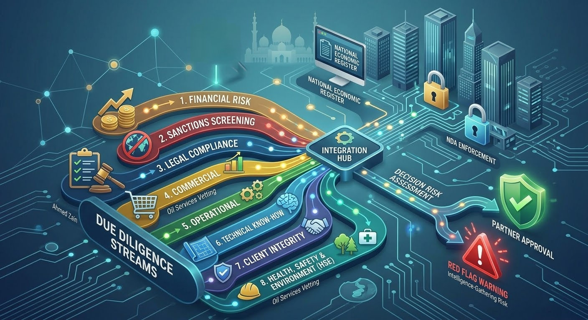

In the highly sensitive, important and profitable field of oil services, establishing new partnerships presents both opportunities and significant risks.
The concern that a potential partner may be using the guise of collaboration to gather market intelligence and map the competitive landscape for other companies is a real risk in this industry. The oil services sector is unique in that technical know-how, client relationships, pricing strategies and project experience are themselves core assets. Once leaked, they can directly weaken a company's competitive advantage.
1. Why due diligence for partnerships in oil services is particularly critical
The oil services industry has several characteristics that make it especially exposed to intelligence-gathering behavior:
- The value of asymmetric information is extremely high. In oil services, information about drilling efficiency, completion techniques, equipment maintenance cycles, client procurement preferences and project profit margins often constitutes the key variables in the competitive landscape. A seemingly ordinary “technical exchange” document may contain enough information to allow a competitor to adjust its bidding strategy.
- Project-based cooperation is naturally suited to information aggregation. Oil service projects typically have long cycles and multiple participants. In joint ventures, consortium bids or subcontracting arrangements, partners have legitimate reasons to access information about cost structures, technical solutions and client relationships. This “legitimate access” provides cover for deliberate intelligence collection.
2. Practical steps for verifying a partner's identity and legitimacy
Use official registration systems to verify corporate existence
The first and most fundamental step is to confirm whether the other party is genuinely and legally registered and holds valid licenses.
In the UAE, for example, you can query a company's license details, economic activity types and registration information through the National Economic Register. This platform integrates government data at both the federal and local levels and allows searches by company name, license number or economic activity. Each emirate's Department of Economic Development also provides independent query channels, such as the Dubai Department of Economy and Tourism's trade name search and license information services.
When verifying, pay particular attention to whether the company's registered economic activity is related to oil services; whether the registered address actually exists (which can be cross-verified through maps or third-party channels); and whether the license is within its validity period.
Verify the authenticity of contact information and communication channels
A warning sign worth noting in the oil services sector is a counterparty using an email domain that does not match the company identity it claims. Reports have shown, for example, that in a recruitment scam involving an oil and gas company, the sender used hr@jestecoil.com, whereas legitimate UAE companies typically use .ae domains. On verification, the domain had been registered only a very short time earlier, and the company did not appear in any official directory.
Cross-verification should cover whether the email domain matches the company's official website; when the website was registered (a website registered only a few months ago almost certainly does not belong to a mature company in the oil services sector); whether the phone number provided is a landline rather than only a mobile number; and whether the company address can be confirmed through third-party channels, such as the building management.
Use business intelligence tools for deeper screening
For partnerships involving significant interests, public registration information alone may not be sufficient. Go further by:
- Asking for the full company details: legal company name, physical and mailing addresses, contact information, line of business, legal structure (for example LLC or corporation) and number of employees, supported by two official documents such as a tax letter or business license.
- Using professional business intelligence firms. Firms such as Dun & Bradstreet offer enterprise verification based on the D-U-N-S number, which can confirm a company's legal identity and registration status and carry out compliance and sanctions screening. These tools can also identify ultimate beneficial ownership, revealing hidden or high-risk ownership structures.
Dun & Bradstreet's supplier risk management framework covers legal verification and identity checks, ultimate beneficial ownership verification, anti-money laundering and sanctions screening, credit and financial risk review, and cross-border risk assessment. In oil services, sanctions screening is particularly important, as the sector involves multi-country operations and complex supply chains.
3. Warning signs of intelligence-gathering behavior
Even if the counterparty is legally registered, its intent to cooperate may still be problematic. The following behavioral patterns need careful attention and close watching:
- Abnormal focus on technical details. Normal business cooperation discussions focus on the scope of cooperation, division of labor, delivery standards and commercial terms — in short, a detailed and comprehensive responsibility matrix should be created and implemented. If the other party shows excessive interest in your proprietary technology, processes, client lists or pricing models at an early stage, and this information is disproportionate to its actual role in the cooperation, that is a warning signal that deserves a closer look.
- Avoiding commitments while pushing for information sharing. If the other party keeps postponing a formal cooperation agreement or non-disclosure agreement but keeps pushing for “technical exchanges” or “information-sharing meetings”, it may be deliberately gathering information while avoiding legal obligations.
- Vague recipient scopes. Watch for requests that information be shared with “affiliates” or “advisors” whose identity and role are unclear. If the scope of recipients is vague, the ultimate destination of the information cannot be traced.
- Procurement patterns inconsistent with company size. If a little-known small company suddenly shows interest in large-scale, highly complex oil service projects, and is insensitive to price and unconcerned about technical feasibility, its true purpose may not be the cooperation itself.
4. Contractual tools: the non-disclosure agreement as the first line of defense
Before sharing any critical or confidential information with a potential partner, signing a non-disclosure agreement (NDA) is a basic protective measure. The core function of an NDA is not only to provide a basis for legal remedies but also to serve as a screening tool: a counterparty willing to sign a reasonable NDA is generally more likely to be a genuine partner, while one that resists signing requires deeper verification — the resistance is a red flag in itself.
An NDA should clearly define the scope of confidential information (including technical know-how, business strategies, client information and pricing data); restrictions on the purpose of use (solely for evaluating or executing the described cooperation); the scope of information recipients; obligations to return or destroy information; and the duration of the agreement.
It is important, however, to recognize the limitations of NDAs. Legal proceedings to enforce them are relatively rare and time-consuming, so an NDA should be part of a comprehensive protection strategy, not the sole measure. Guidance from the World Intellectual Property Organization also recommends that, in addition to contractual measures, companies establish information access controls, mark confidential materials and regularly monitor compliance.
5. A phased disclosure strategy
For highly sensitive cooperation in the oil services industry, a phased disclosure strategy is recommended:
- Phase one — initial contact: exchange only publicly available information and general statements of intent. Complete basic corporate registration and identity verification at this stage.
- Phase two — after signing an NDA: begin discussing the cooperation framework and general technical capabilities, without specific proprietary technical parameters, client names or pricing models.
- Phase three — after signing a formal cooperation agreement or binding term sheet: gradually disclose the information needed to execute the cooperation, based on the counterparty's actual role and needs. Even at this stage, the scope of disclosure should strictly correspond to that role.
6. Establishing internal information controls
However trustworthy the partner may appear, internal controls are necessary. These include confidentiality training for employees who handle sensitive information; an information classification system that sets out which information can be shared with external parties, and under what conditions; a record of all information disclosed to potential partners, and when; and continuous monitoring of information flows throughout the negotiations.
The World Intellectual Property Organization (WIPO) notes that one goal of trade secret management is “preventing the company from being contaminated by third-party trade secrets”. Beyond protecting your own information, you must also be careful not to take in third-party information of unknown origin, lest you become embroiled in someone else's trade secret dispute. In the oil services industry, where personnel mobility is high, this point deserves particular attention.
Summary
Verifying a potential partner's intent and capabilities requires combining official registration checks, business intelligence screening, behavioral pattern analysis and contractual protection. No single method provides complete security, but a systematic due diligence process can significantly reduce the risk.
In oil services, information itself is an asset — and control over information flows should advance in step with the negotiations.
في مجال خدمات النفط، بما يتسم به من حساسية بالغة وأهمية وربحية عالية، يحمل بناء شراكات جديدة فرصًا كبيرة ومخاطر كبيرة في آن واحد.
فالقلق من أن يتخذ شريك محتمل من التعاون غطاءً لجمع معلومات السوق ورسم خريطة المنافسة لصالح شركات أخرى هو خطر حقيقي في هذه الصناعة. ويتميّز قطاع خدمات النفط بأن المعرفة الفنية وعلاقات العملاء واستراتيجيات التسعير وخبرات المشاريع هي في ذاتها أصول جوهرية؛ وإذا تسرّبت، فقد تُضعف الميزة التنافسية للشركة بشكل مباشر.
1. لماذا تكتسب العناية الواجبة في شراكات خدمات النفط أهمية خاصة
تتسم صناعة خدمات النفط بعدة خصائص تجعلها معرّضة بشكل خاص لسلوكيات جمع المعلومات:
- قيمة التفاوت في المعلومات مرتفعة للغاية. ففي خدمات النفط، كثيرًا ما تشكّل المعلومات المتعلقة بكفاءة الحفر، وتقنيات الإكمال، ودورات صيانة المعدات، وتفضيلات الشراء لدى العملاء، وهوامش ربح المشاريع، المتغيرات الأساسية في المشهد التنافسي. وقد تحتوي وثيقة «تبادل فني» تبدو عادية على معلومات كافية لتمكين منافس من تعديل استراتيجيته في العطاءات.
- التعاون القائم على المشاريع مهيّأ بطبيعته لتجميع المعلومات. فمشاريع خدمات النفط عادةً طويلة الدورة ومتعددة الأطراف. وفي المشاريع المشتركة أو العطاءات عبر الائتلافات أو ترتيبات التعاقد من الباطن، يكون للشركاء أسباب مشروعة للاطلاع على هياكل التكاليف والحلول الفنية وعلاقات العملاء. وهذا «الاطلاع المشروع» يوفّر غطاءً لجمع المعلومات عن قصد.
2. خطوات عملية للتحقق من هوية الشريك ومشروعيته
استخدم أنظمة التسجيل الرسمية للتحقق من وجود الشركة
الخطوة الأولى والأساسية هي التأكد من أن الطرف الآخر مسجّل فعلًا بشكل قانوني ويحمل تراخيص سارية.
ففي الإمارات مثلًا، يمكنك الاستعلام عن تفاصيل رخصة الشركة وأنواع نشاطها الاقتصادي وبيانات تسجيلها عبر السجل الاقتصادي الوطني. وتجمع هذه المنصة البيانات الحكومية على المستويين الاتحادي والمحلي، وتتيح البحث باسم الشركة أو رقم الرخصة أو النشاط الاقتصادي. كما توفّر دائرة التنمية الاقتصادية في كل إمارة قنوات استعلام مستقلة، مثل خدمات البحث عن الأسماء التجارية والاستعلام عن الرخص لدى دائرة الاقتصاد والسياحة في دبي.
وعند التحقق، انتبه بشكل خاص إلى ما إذا كان النشاط الاقتصادي المسجّل للشركة مرتبطًا بخدمات النفط، وما إذا كان العنوان المسجّل موجودًا فعلًا (ويمكن التحقق منه عبر الخرائط أو جهات أخرى)، وما إذا كانت الرخصة ضمن مدة سريانها.
تحقّق من صحة بيانات الاتصال وقنوات التواصل
من علامات التحذير الجديرة بالانتباه في قطاع خدمات النفط استخدام الطرف الآخر نطاق بريد إلكتروني لا يطابق هوية الشركة التي يدّعيها. فقد أظهرت تقارير مثلًا أنه في عملية احتيال توظيف تتعلق بشركة نفط وغاز، استخدم المرسل العنوان hr@jestecoil.com، في حين تستخدم الشركات الإماراتية المشروعة عادةً نطاقات .ae. وتبيّن عند التحقق أن النطاق سُجّل قبل فترة قصيرة جدًا، وأن الشركة لا تظهر في أي دليل رسمي.
وينبغي أن يشمل التحقق المتقاطع: هل يطابق نطاق البريد الإلكتروني الموقع الرسمي للشركة؟ ومتى سُجّل الموقع؟ (فالموقع المسجّل منذ بضعة أشهر فقط لا يعود في الغالب إلى شركة راسخة في قطاع خدمات النفط)، وهل رقم الهاتف المقدّم خط أرضي لا رقم جوال فقط؟ وهل يمكن تأكيد عنوان الشركة عبر جهات أخرى، مثل إدارة المبنى؟
استخدم أدوات استخبارات الأعمال لفحص أعمق
في الشراكات التي تنطوي على مصالح كبيرة، قد لا تكفي بيانات التسجيل العامة وحدها. اذهب أبعد من ذلك عبر:
- طلب بيانات الشركة كاملة: الاسم القانوني، والعنوان الفعلي والبريدي، وبيانات الاتصال، ومجال العمل، والشكل القانوني (مثل ذات مسؤولية محدودة أو مساهمة)، وعدد الموظفين، مدعومة بمستندين رسميين مثل خطاب ضريبي أو رخصة تجارية.
- الاستعانة بشركات استخبارات الأعمال المتخصصة. إذ تقدّم شركات مثل Dun & Bradstreet خدمات التحقق من المنشآت اعتمادًا على رقم D-U-N-S، ما يتيح تأكيد الهوية القانونية للشركة ووضع تسجيلها، وإجراء فحوص الامتثال والعقوبات. كما يمكن لهذه الأدوات تحديد المالك المستفيد النهائي، وكشف هياكل الملكية الخفية أو عالية المخاطر.
ويشمل إطار إدارة مخاطر المورّدين لدى Dun & Bradstreet: التحقق القانوني وفحص الهوية، والتحقق من المالك المستفيد النهائي، وفحص مكافحة غسل الأموال والعقوبات، ومراجعة الائتمان والمخاطر المالية، وتقييم المخاطر العابرة للحدود. وفي خدمات النفط تحديدًا، يكتسب فحص العقوبات أهمية خاصة، لأن القطاع يقوم على عمليات في دول متعددة وسلاسل توريد معقّدة.
3. علامات التحذير التي تكشف سلوك جمع المعلومات
حتى لو كان الطرف الآخر مسجّلًا قانونيًا، فقد تظل نيّته في التعاون موضع شك. وتستدعي الأنماط السلوكية التالية انتباهًا دقيقًا ومتابعة لصيقة:
- تركيز غير طبيعي على التفاصيل الفنية. فنقاشات التعاون التجاري المعتادة تتركّز على نطاق التعاون وتقسيم العمل ومعايير التسليم والشروط التجارية — وباختصار، ينبغي إعداد مصفوفة مسؤوليات تفصيلية وشاملة وتطبيقها. فإذا أبدى الطرف الآخر اهتمامًا مفرطًا بتقنياتك الخاصة أو عملياتك أو قوائم عملائك أو نماذج تسعيرك في مرحلة مبكرة، وكانت هذه المعلومات لا تتناسب مع دوره الفعلي في التعاون، فهذه إشارة تحذير تستحق نظرة أدق.
- التهرّب من الالتزامات مع الدفع نحو تبادل المعلومات. إذا ظل الطرف الآخر يؤجّل توقيع اتفاقية تعاون رسمية أو اتفاقية عدم إفصاح، بينما يواصل الدفع نحو «تبادلات فنية» أو «اجتماعات لتبادل المعلومات»، فقد يكون يجمع المعلومات عمدًا متجنبًا الالتزامات القانونية.
- نطاق غامض لمتلقي المعلومات. انتبه إلى طلبات مشاركة المعلومات مع «شركات تابعة» أو «مستشارين» غير واضحي الهوية والدور؛ فإذا كان نطاق المتلقين غامضًا، تعذّر تتبّع الوجهة النهائية للمعلومات.
- أنماط شراء لا تتناسب مع حجم الشركة. إذا أبدت شركة صغيرة غير معروفة فجأة اهتمامًا بمشاريع خدمات نفطية ضخمة وبالغة التعقيد، وبدت غير مكترثة بالسعر ولا بالجدوى الفنية، فقد لا يكون التعاون نفسه هو غرضها الحقيقي.
4. الأدوات التعاقدية: اتفاقية عدم الإفصاح خط الدفاع الأول
قبل مشاركة أي معلومات حرجة أو سرية مع شريك محتمل، يُعد توقيع اتفاقية عدم إفصاح إجراءً وقائيًا أساسيًا. ولا تقتصر وظيفة هذه الاتفاقية على توفير أساس للتعويض القانوني، بل تعمل أيضًا أداةً للفرز: فالطرف المستعد لتوقيع اتفاقية معقولة غالبًا ما يكون شريكًا حقيقيًا، أما من يقاوم التوقيع فيستدعي تحققًا أعمق — ومقاومته في حد ذاتها علامة تحذير.
وينبغي أن تحدد الاتفاقية بوضوح: نطاق المعلومات السرية (بما فيها المعرفة الفنية واستراتيجيات الأعمال ومعلومات العملاء وبيانات التسعير)، وقيود غرض الاستخدام (حصرًا لتقييم التعاون الموصوف أو تنفيذه)، ونطاق متلقي المعلومات، والتزامات إعادة المعلومات أو إتلافها، ومدة الاتفاقية.
ومع ذلك، من المهم إدراك حدود هذه الاتفاقيات؛ فإجراءات إنفاذها قضائيًا نادرة نسبيًا وتستغرق وقتًا طويلًا، لذا ينبغي أن تكون جزءًا من استراتيجية حماية شاملة لا الإجراء الوحيد. كما توصي إرشادات المنظمة العالمية للملكية الفكرية بأن تعتمد الشركات، إلى جانب التدابير التعاقدية، ضوابط للوصول إلى المعلومات، وأن تضع علامات على المواد السرية، وأن تراقب الامتثال بانتظام.
5. استراتيجية الإفصاح المرحلي
في التعاون شديد الحساسية في صناعة خدمات النفط، يُنصح باتباع استراتيجية إفصاح على مراحل:
- المرحلة الأولى — التواصل الأولي: تبادل المعلومات المتاحة للعموم وبيانات النوايا العامة فقط، وإتمام التحقق الأساسي من تسجيل الشركة وهويتها في هذه المرحلة.
- المرحلة الثانية — بعد توقيع اتفاقية عدم الإفصاح: البدء في مناقشة إطار التعاون والقدرات الفنية العامة، دون التطرق إلى المعايير الفنية الخاصة أو أسماء العملاء أو نماذج التسعير.
- المرحلة الثالثة — بعد توقيع اتفاقية تعاون رسمية أو مذكرة شروط ملزمة: الإفصاح التدريجي عن المعلومات اللازمة لتنفيذ التعاون بحسب الدور الفعلي للطرف الآخر واحتياجاته. وحتى في هذه المرحلة، ينبغي أن يتطابق نطاق الإفصاح بدقة مع ذلك الدور.
6. إرساء ضوابط داخلية للمعلومات
مهما بدا الشريك جديرًا بالثقة، فالضوابط الداخلية ضرورية. وتشمل: تدريب الموظفين الذين يتعاملون مع المعلومات الحساسة على السرية، ونظامًا لتصنيف المعلومات يحدد ما يجوز مشاركته مع الأطراف الخارجية وبأي شروط، وسجلًا بكل المعلومات التي أُفصح عنها للشركاء المحتملين وتوقيتها، ومراقبة مستمرة لتدفق المعلومات طوال المفاوضات.
وتشير المنظمة العالمية للملكية الفكرية (WIPO) إلى أن من أهداف إدارة الأسرار التجارية «منع تلوّث الشركة بالأسرار التجارية لأطراف ثالثة». فإلى جانب حماية معلوماتك، عليك الحذر من استقبال معلومات مجهولة المصدر من أطراف أخرى، حتى لا تجد نفسك طرفًا في نزاع على أسرار تجارية لغيرك. وفي صناعة خدمات النفط، حيث يكثر تنقّل الكوادر، تستحق هذه النقطة اهتمامًا خاصًا.
الخلاصة
يتطلب التحقق من نوايا الشريك المحتمل وقدراته الجمع بين التحقق من التسجيل الرسمي، وفحص استخبارات الأعمال، وتحليل الأنماط السلوكية، والحماية التعاقدية. لا توفّر أي وسيلة منفردة أمانًا كاملًا، لكن عملية عناية واجبة منهجية قادرة على خفض المخاطر بشكل كبير.
في خدمات النفط، المعلومات في حد ذاتها أصل — وينبغي أن تتقدّم السيطرة على تدفقها بالتوازي مع تقدّم المفاوضات.